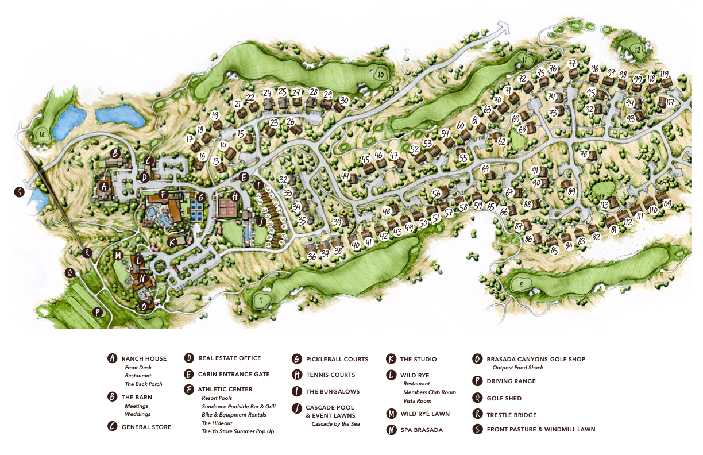

May 15, 2027Bend, Oregon
— Days To Go!
We recommend staying at Brasada Ranch. We have a discount already provided using the link below.
Use this link to book or call 1-877-771-4239.

The nearest airport is Redmond Municipal Airport (RDM), about a 25-minute drive from Powell Butte. Portland International (PDX) is a larger alternative, roughly 3.5 hours away.
Rental cars are available at the airport, though not necessary if you're staying at Brasada Ranch.
Parking is available on-site at the venue.